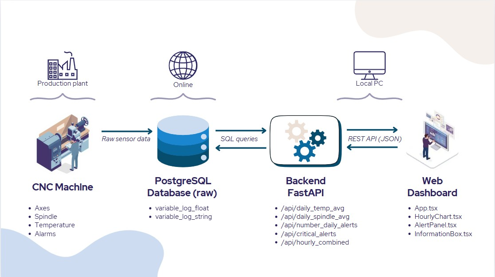

TBDA Project Architectures — Current Status and Roadmap Alignment (presented on 15/12/2025)
1. The original roadmap (A, B, C)
We defined three evolutionary stages:
Architecture A — Local Batch
- Remote PostgreSQL (raw data).
- All analysis performed locally in Python (pandas, SQL).
- Local dashboard in Streamlit.
- Typical use: prototyping, data understanding, batch analytics.
Architecture B — Time-Series Optimized
- PostgreSQL + TimescaleDB (hypertables + continuous aggregates).
- Python ETL/analytics still local.
- Dashboard (Streamlit) reading pre-aggregated data from the DB.
- Objective: performance & scalability on large volumes.
Architecture C — Streaming / Real-Time
- Kafka for ingestion, Spark Structured Streaming for real-time processing.
- PostgreSQL (operational) + TimescaleDB (historical).
- Dashboard showing machine state and KPIs in near real-time.
- Objective: real-time analytics and immediate alerts.

2. CURRENT Architecture

2.1 Data source / Cloud
-
CNC machine (physical plant)
Produces high-frequency signals (axes, spindle, temperatures, alarms). -
Remote PostgreSQL
- Main tables:
public.variable_log_float(temperature, spindle load, machine state, etc.)public.variable_log_string(alarms stored as arrays like[code, msg, plc, line])
- No TimescaleDB installed (no hypertables / continuous aggregates).
2.2 Local “data & analytics” (PC)
We currently have two sub-worlds:
a) Extraction / data analysis toolbox (offline) (not shown in the diagram)
Standalone scripts using config.yaml + SQLAlchemy/psycopg2 to read from the DB and:
- Explore alarms
-
Alarm data _ extraction.py: parsevariable_log_string, explode arrays, build timeline & summary table. -
Analyze motor utilization / machine state / activity
Engine utilisation data _ extraction.py→ scatter plots per axis.Extraction_operation_in_progress.py→ ON/IDLE/OFF timeline (Gantt-style).-
System_status.py→ hour × day activity pivot table. -
Analyze temperatures
Temperature data _ extraction.py→ temperature trend per axis.-
Temperature data mean and max.py→ 30-minute resample, mean & max. -
Generic CSV export
Analysis_1.py→ extract multiple IDs and save to CSV.
All of these run locally, on-demand, batch, triggered manually.
b) Web backend (FastAPI)
backend/database.py→ psycopg2 connection using environment variables.backend/services.py→ production SQL logic:- daily average temperature (
id_var=618) and spindle load (id_var=630) - daily alarm count (
num_alarms) - list of critical alarms (3 specific descriptions), exploding JSON with
jsonb_array_elements - hourly combined averages (temp + spindle) via
GROUP BY date_trunc('hour', ...) backend/main.py→ FastAPI app exposing:/api/daily_temp_avg/api/daily_spindle_avg/api/number_daily_alerts/api/critical_alerts/api/hourly_combinedwhich callservices.pyand return JSON for the frontend.
2.3 Web Frontend (React)
A React/TypeScript SPA (Vite) running in the local browser.
App.tsx:- manages
selectedDate - calls backend via axios:
/api/daily_temp_avg/api/daily_spindle_avg/api/number_daily_alerts/api/critical_alerts/api/hourly_combined
- displays:
- 3 KPI boxes (
InformationBox.tsx): avg temp, avg spindle, number of alarms - combined hourly chart (
HourlyChart.tsx) with Recharts (dual Y-axis) - critical alarms panel (
AlertPanel.tsx+AlertCard.tsx)
- 3 KPI boxes (
SidePanel.tsx: stub navigation menu (buttons without functionality)style.css: dark theme, dashboard layout
Everything is still batch: the user selects a date → frontend makes HTTP calls → backend executes SQL queries on historical data on demand.
3. Which architecture are we closest to?
We are closest to ARCHITECTURE A (Local Batch), with an evolution:
Architecture A + (REST API + separate frontend)
Why: - Raw remote PostgreSQL data, no TimescaleDB → exactly like A, not like B. - Batch analysis via Python scripts → matches A. - No streaming, no Kafka, no Spark → far from C. - Dashboard is not Streamlit but React + FastAPI; conceptually, it is still a local UI that queries the DB (indirectly) and displays KPIs and charts.
4. Detailed comparison with Architecture A
4.1 Implemented from Architecture A
✅ Remote PostgreSQL as the central data store
✅ Local Python ETL (extraction scripts with pandas + SQLAlchemy)
✅ Local Python analytics (KPIs, timelines, pivots, resampling)
✅ Interactive dashboard (React + FastAPI instead of Streamlit, but same function)
✅ Batch mode, not real-time
Additionally:
✅ Added a FastAPI backend layer, reusable and clean, separating SQL from UI logic.
4.2 What is missing (or different) from Architecture A
❌ Streamlit dashboard (replaced by a separate React frontend + FastAPI backend).
⚠️ Batch automation remains manual on the extraction side (scripts run by hand), consistent with A.
Conclusion: for the purposes of the roadmap, Architecture A can be considered complete.
5. Comparison with Architecture B (Time-Series Optimized)
5.1 What we already have (partially)
✅ Temporal queries with aggregations already implemented:
- daily averages (AVG with timestamp range condition)
- hourly averages (get_hourly_combined_stats using date_trunc('hour'))
- daily alarm counts
✅ A clean separation between backend and frontend, ready to benefit from a faster DB
Thus, we are conceptually aligned with B in terms of query patterns, but not in infrastructure.
5.2 What is missing to truly reach “Architecture B”
1) TimescaleDB on top of PostgreSQL
- install TimescaleDB extension
- convert tables (variable_log_float, optionally variable_log_string) into hypertables
2) Continuous aggregates / time-series materialized views - create continuous aggregate views, e.g.: - hourly averages for key variables - daily aggregates - alarm counters - backend should query these instead of recalculating on the raw table
3) Backend adjustments
- refactor services.py to query the new aggregate views
- optionally support multi-day ranges more efficiently
4) Some orchestration - scheduled jobs to populate derived tables (if some transformations remain outside Timescale)
5.3 Therefore: what must be done practically to go from A → B
We have currently developed a system whose architecture mirrors A: - raw data in PostgreSQL, - batch analysis in Python (scripts + FastAPI backend), - a local dashboard consuming KPIs calculated on-demand.
To move toward an architecture like B, we now need to:
1. Enable TimescaleDB and convert variable_log_* tables into hypertables.
2. Define continuous aggregates (hourly/daily views) for temperature, spindle load, machine state and alarms.
3. Refactor services.py to read from these pre-aggregated views instead of the raw table.
4. Consider deploying the backend closer to the DB (cloud/server) to reduce latency while keeping the frontend local/web.